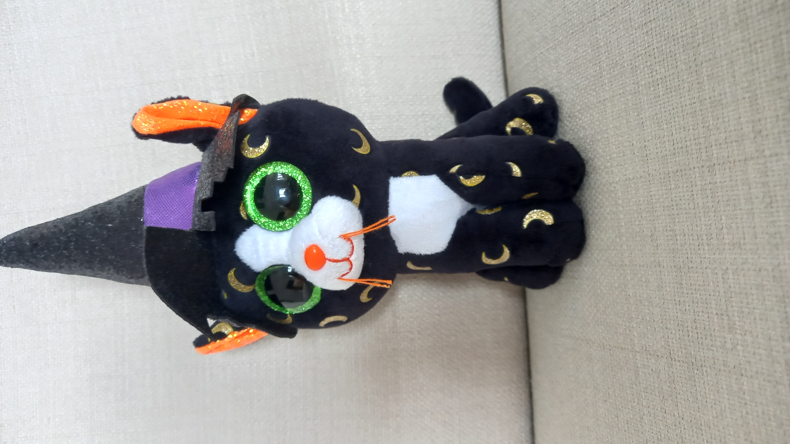

She may give you a little fright, but her personality is bright!
Pandora was brought to life in 2015 as a witch! A talented one, for sure.
Her birthday is September 29, meaning she's turning 7 in a few months! Ooh, how exciting!
Her favourite colour is black, which is very normal for Halloween Beanie Boos.
2. She had surgery SUPER recently, in May 2022!
3. Her hat is unusually big.
Her birthday is September 29, meaning she's turning 7 in a few months! Ooh, how exciting!
Her favourite colour is black, which is very normal for Halloween Beanie Boos.
Fun Facts:
1. Her birthday is 2 days away from Juniplush's Owner's birthday.
2. She had surgery SUPER recently, in May 2022!
3. Her hat is unusually big.